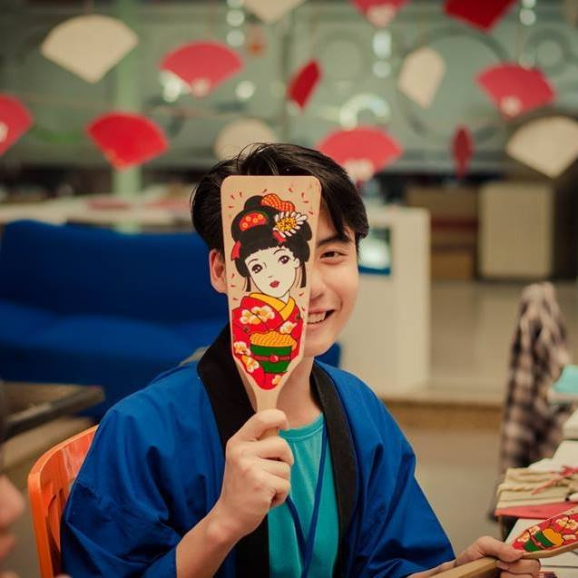

FPTU và tôi - chúng ta không hoàn hảo
Gần một năm, nó quá dài để tôi kịp nhận thức mình thay đổi đến mức nào. Nó qua nhanh khi tôi nhận thức được còn nhiều điều chưa hoàn thành. Và nó thật sự là đủ để tôi biết bản thân làm được gì. FPTU với tôi, gần một năm gắn liền.
FPTU cho tôi nhiều và lấy đi không hề ít. FPTU cho tôi kiến thức, mang đến nhiều trải nghiệm và đặc biệt là mang nhiều người hơn đến bên tôi. Một năm cho mình kịp nhận ra quanh mình có rất nhiều người quan tâm, thoải mái với họ và với mình. Cho tôi có căn bản, tự tin vào tiếng nói và có trách nhiệm, bảo vệ hành động bản thân. Lấy thì không ít đâu nhé, FPTU lấy của tôi bao sức lực, bao hoan hỉ và cả nước mắt rồi. FPTU lấy đi của tôi nhiều người mà tôi tin tưởng và FPTU còn lấy đi của tôi một chút tình yêu…
 "Với tôi, cả tôi và FPTU đều không hoàn hảo"Nhưng thật sự nếu có người hỏi tôi có bao giờ hối hận hay nơi mà bạn cảm thấy tuyệt nhất thì thật sự là chưa bao giờ hối hận và FPTU là nơi tuyệt vời. Một năm trước cực kì háo hức và lo lắng. Một đứa từ quê lên trường mặc định của con nhà giàu học. Tôi sợ, sợ lắm chứ, sợ bạn bè đánh giá, sợ ánh mắt chằm chằm khi họ nhìn mình, sợ bản thân kém cỏi, sợ không được chú ý khi cạnh tôi, các bạn có hơn tôi rất nhiều thứ. Thứ suy nghĩ của tuổi mới lớn đang cố vượt ra một môi trường hoàn toàn mới, cố thể hiện và chứng tỏ bản thân nhưng thực chất là vượt qua sự tự ti của bản thân. Nó quả thật là thử thách lớn, khi ngày đầu lên cảm thấy mình khác biệt so với mọi người, từ cách sống, cách ăn mặc và thái độ. Có lúc sợ đi ra ngoài, sợ chạm mặt mọi người hay không dám nói chuyện. Nhưng quan trọng là cái sợ đấy may mắn thành động lực để mình thay đổi. Ngồi nhớ lại chỉ cười vì mình từng như vậy, tự ti nhiều chuyện không đáng.
Một năm, từng ngày cố gắng tính chuyện ngày kế tiếp. Nhiều lúc muốn dừng nhưng nhìn lại xem mình làm được gì thì chẳng có gì đâu, phải làm tiếp thôi đến khi không biết mình đang làm gì thì dừng. Một năm luyện ra một đứa có đôi chút tự tin và điên như bây giờ. Từ ngày được làm sự kiện đầu tiên khi đi học quân sự đến việc la liếm các sự kiện tại trường rồi cùng làm founder một chương trình tạm ổn, apply vào vài dự án, làm thêm vài công việc. Nó không là gì quá lớn, nó chỉ là một phần tuổi trẻ của tôi tại FPTU và nó cần được viết thêm rất nhiều. Nhưng không có FU thì không chắc tôi làm được nhiều thứ như vậy tại một môi trường khác. Và không chắc tuổi trẻ se có một phần đáng nhớ đến như vậy.
Một năm tình yêu FPTU trong tôi không còn sâu đậm như ngày đầu. Đừng hỏi tại sao vì tình yêu nó luôn giống như đồ thị hình sin có lúc cao lúc thấp. Quan trọng bản thân thấy như thế nào là đủ, thái độ thế nào là hợp và nhận thức được rằng nó quan trọng để mình yêu. Vì cả FPTU và tôi đều không hoàn hảo.
Ngày mai, khai giảng khóa mới rồi. Chỉ muốn nhắn nhủ với các em rằng: Nếu chọn rồi thì đừng hối hận mà tự biến quyết định đấy thành đúng, FPTU với anh luôn là lựa chọn đúng. Vậy thôi.